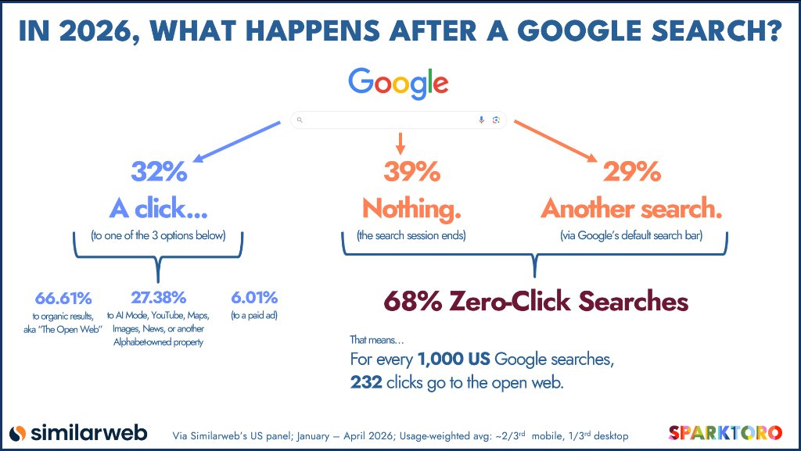
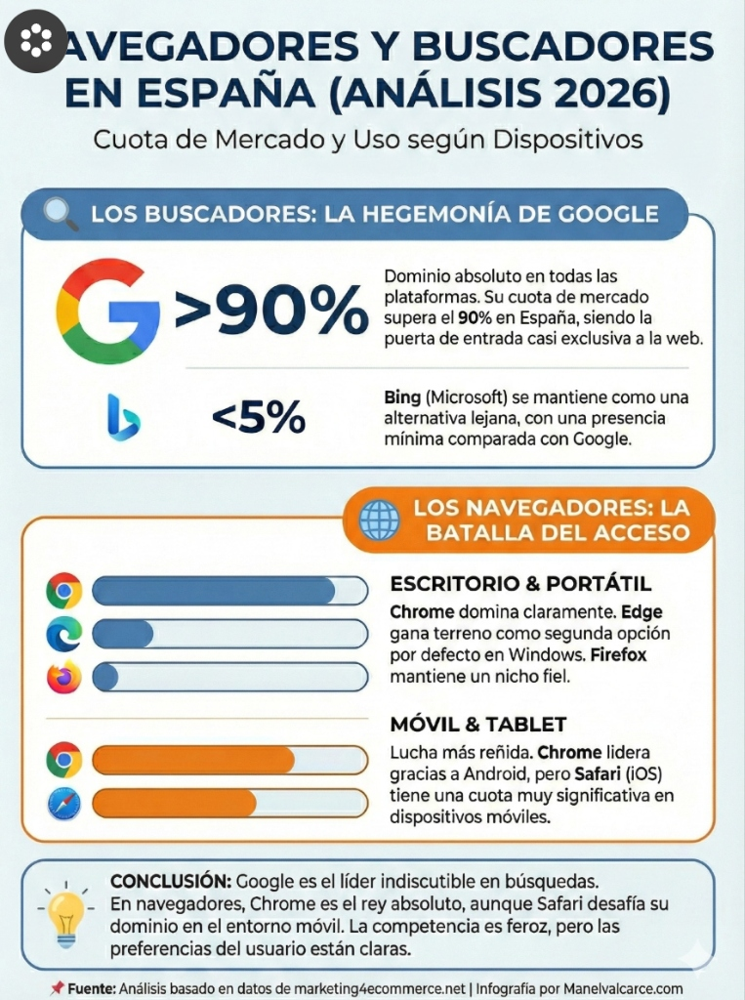
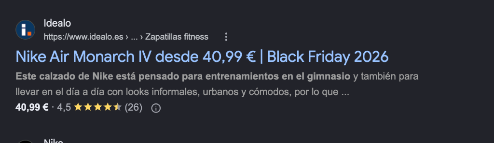
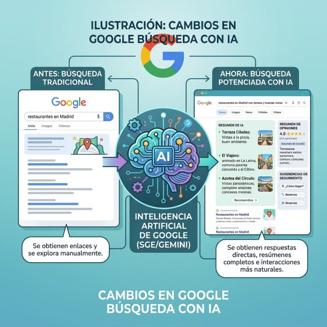

Cómo encontramos
información y cómo
buscar con IA.
Funcionamiento interno de Google, tipos reales de resultados en la página de búsqueda, operadores avanzados y colaboración con asistentes de IA.

Por qué buscar, verificar y ser encontrados están unidos.

Google domina más del 90% en España.
Chrome lidera; Edge gana terreno como segunda opción por defecto en Windows; Firefox mantiene un nicho fiel.
Chrome domina en Android, pero Safari (iOS) tiene una cuota muy significativa — lo que afecta a cómo se muestra Google Maps y los resultados locales.
¿Por dónde llega la información al comprador hoy?
reseñas y datos
Visita la web
Va a la tienda
Decide sin clic
decide
Qué hace un buscador paso a paso.
Rastreo, indexación y publicación de resultados.
Qué busca realmente el cliente detrás de cada consulta.
Quiere aprender
Busca resolver una duda o entender un producto.
Ej: "diferencia entre zapatilla neutra y pronadora"
Busca un sitio
Ya conoce la marca o tienda y quiere ir directo a ella.
Ej: "Runners Centro horario"
Compara opciones
Evalúa modelos, reseñas y tiendas antes de decidir.
Ej: "mejores tiendas running en mi ciudad"
Listo para comprar
Tiene la tarjeta o la decisión tomada para ir o pedir.
Ej: "comprar Pegasus 41 oferta cerca de mí"
Tipos de resultados en Google: Atribución y Rich Results.

Favicon + nombre del sitio + ruta / breadcrumb. Identifica al comercio antes de que el usuario lea el título.
Title link (titular azul en el que se hace clic) + snippet (resumen de texto). Es el resultado orgánico base.
Precio · estrellas ★ · valoraciones visibles sin entrar a la web. Requieren datos estructurados en el código de la tienda.
Multimedia, exploración, mapas e IA en una misma SERP.

El buscador ya no solo lista webs.
Formular bien la pregunta y elegir la herramienta adecuada.
| Objetivo comercial | Herramienta ideal | Cómo preguntar mejor |
|---|---|---|
| Tiendas o competidores locales | Google Maps / Apple Maps | Sector + barrio/ciudad + filtro de Abierto ahora y reseñas recientes. |
| Informes, leyes o catálogos | Buscador web (Google) | Palabras clave exactas + operadores avanzados (site:, filetype:pdf). |
| Comparar, resumir o idear | Asistente IA (Perplexity, ChatGPT, Gemini) | Prompt con rol, contexto comercial, criterios claros y petición de fuentes. |
| Cifras oficiales y precios reales | Fuente primaria directa | Confirmar directamente en INE, CNMC, BOE o web oficial del fabricante. |
Cinco operadores para filtrar ruido y encontrar datos reales.
"frase exacta"01"comercio minorista" 2026.site:dominio.es02site:ine.es ventas minoristas.filetype:pdf03tendencias retail filetype:pdf.-término04escaparatismo tienda -curso -empleo.A OR B05"fidelización" OR "CRM" pymes.Colaborar con asistentes de IA sin obtener respuestas genéricas.
"Dime cómo vender más en una tienda."
Resultado: consejos obvios, sin contexto local, sin cifras ni fuentes verificables.
- 1. Rol: "Actúa como consultor de retail omnicanal."
- 2. Contexto: "Tienda física de calzado urbano en el centro de Valencia, ticket medio 95 €."
- 3. Tarea: "Propón 5 acciones para atraer tráfico local esta temporada en tabla."
- 4. Control: "Cita fuentes si das datos e indica qué es estimación."
Registrar y organizar las fuentes encontradas.
Qué guardar siempre
Título + URL exacta + Entidad o autor + Fecha de consulta. Si no puedes volver a la fuente, el dato no sirve en un informe.
Separar hecho de opinión
Etiqueta si es dato oficial (INE, estudio sectorial), opinión/blog o respuesta de IA pendiente de validar.
Carpeta de proyecto
Crea una hoja de cálculo o documento por proyecto (tu futuro Plan de Marketing de U08) para no perder enlaces entre sesiones.
Misión en aula: radiografía de búsqueda e IA.
Instrucciones
- 01 · Elige un sector comercial local (ej. óptica, tienda de bicis, cafetería de especialidad, zapatería) en tu ciudad.
- 02 · Analiza la SERP de Google: busca "[producto] en [ciudad]" y anota qué tipos de resultados visuales aparecen (SEM, AI Overview, Local Pack, Rich Results, imágenes, PAA).
- 03 · Usa operadores avanzados: ejecuta una búsqueda con
site:ofiletype:pdfpara encontrar un dato oficial o informe real de ese sector. - 04 · Consulta a una IA: usa un prompt de 4 piezas pidiendo fuentes y registra 3 enlaces válidos en tu ficha.
- Sector y ciudad elegidos: __________________
- Tipos de resultado vistos en SERP: __________
- ¿Aparece AI Overview / Local Pack?: Sí / No
- Operador usado y documento hallado: ______
- Prompt utilizado con la IA: ________________
- 3 fuentes registradas (Título + URL + Fecha):
1. _______________________
2. _______________________
3. _______________________